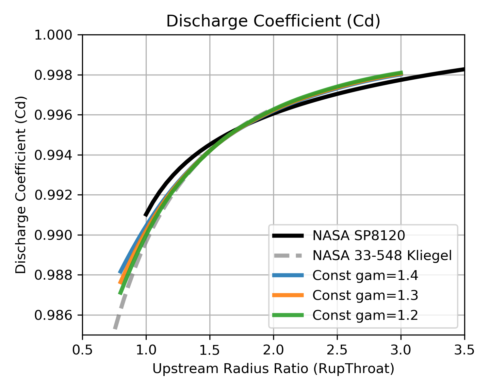
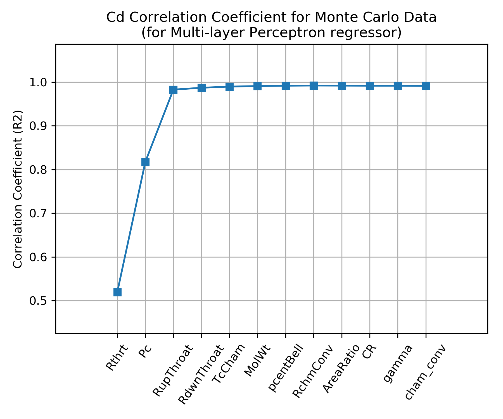
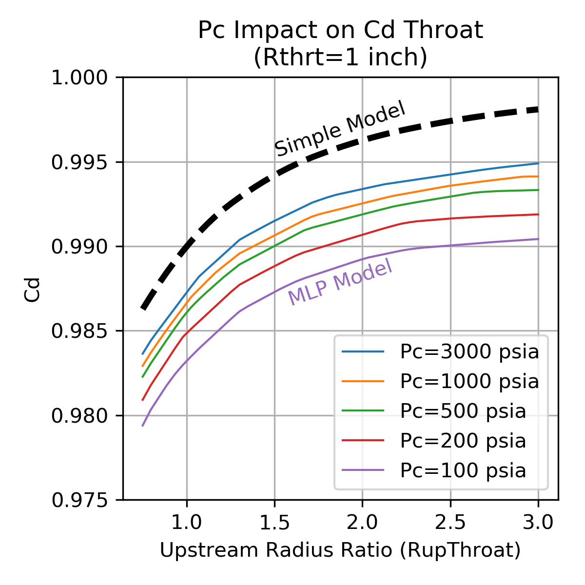
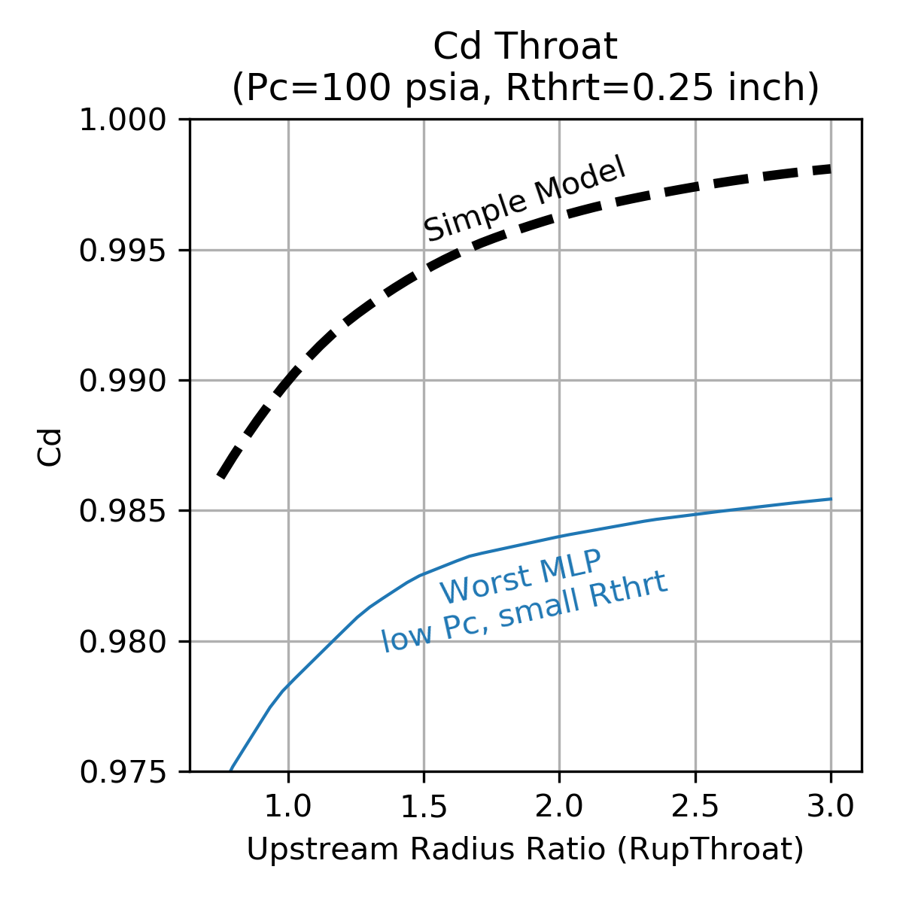
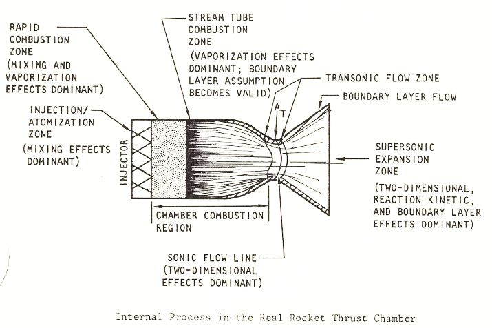

Efficiencies¶
Efficiency is represented with the symbol \(\large{\eta}\). Each \(\large{\eta}\) will have a subscript to indicate the type of efficiency, for example mixing efficiency can be shown as \(\large{\eta_{mix}}\)
In a liquid propellant rocket engine there are two main, overall efficiencies to consider:
Efficiency of the characteristic velocity, \(\large{\eta_{C^*}}\), called Cstar Efficiency
Efficiency of the specific impulse, \(\large{\eta_{Isp}}\), called Isp Efficiency
Cstar Efficiency¶
The characteristic velocity, or Cstar (\(C^*\)), is a property of propellant combustion products that will dictate the flow rate (\(\dot m\)) through a rocket thruster throat of given area (\(A_t\)) and discharge coefficient (\(C_d\)). The ideal value of cstar is calculated by RocketCEA a python wrapper of the NASA CEA FORTRAN Code.
The Cstar Efficiency, \(\large{\eta_{C^*}}\), is used to calculate the delivered Cstar of the thruster. Note that \(\large{\eta_{C^*}}\) is calculated from the product of other chamber efficiencies.
Thruster mass flow rate is then given by the following equation.
Note that as \(\large{C^*_{del}}\) gets smaller \(\large{\dot m}\) gets larger. Thus when Cstar Efficiency, \(\large{\eta_{C^*}}\) gets smaller, \(\large{\dot m}\) gets larger.
\(\large{C^*_{del}}\) and \(\large{\dot m}\) are inversely proportional.
The Cstar Efficiency, \(\large{\eta_{C^*}}\), is often used to characterize injector design quality since fully mixed, vaporized and combusted propellants tend to have higher \(\large{\eta_{C^*}}\).
Discharge Coefficient¶
When calculating throat discharge coefficient (\(C_d\)) with a model using constant gas properties and ignoring the boundary layer, \(C_d\) is shown to be primarily a function of the upstream radius of curvature, RupThroat. The ratio of specific heats of the combustion gas, gamma (\(\large{\gamma}\)) has a small influence at low values of RupThroat, but in this simple model \(\large{\gamma}\) can be ignored with little difference in calculated \(C_d\).
The chart at below shows \(C_d\) as calculated by such a model having constant gas properties and ignoring the boundary layer. The chart compares those calculations with published values from NASA SP 8120 and from NASA Technical Memorandum 33-548, Simplified Procedures for Correlation of Experimentally Measured and Predicted Thrust Chamber Performance
More sophisticated models will, in general, predict \(C_d\) values lower than what is shown here, however, this more simple model shows good agreement with both NASA sources. (The NASA curves were digitized using Digiplot.)
{kind=link}
| NASA SP 8120 | NASA 33-548 |
|---|---|

|

|
|
Click image to see full size |
|
Shown above-left is Figure 3 from NASA SP 8120, above-right, is figure 9 from 1973 NASA Technical Memorandum 33-548, Simplified Procedures for Correlation of Experimentally Measured and Predicted Thrust Chamber Performance.
Figure 3 from NASA SP 8120 as well as the top curve of the NASA 33-548 figure by Kliegel and Levine show very similar predictions to the constant gas properties calculations.
While RupThroat is clearly a major independent parameter for calculating \(C_d\), the wide spread of \(C_d\) values in the NASA 33-548 report would seem to indicate that additional influencing parameters should, perhaps be considered.
\(C_d\) Monte Carlo¶
In order to characterize the variation in \(C_d\) beyond just RupThroat and to identify additional influencing parameters, a Monte Carlo analysis was conducted on a wide range of propellant combinations, chamber pressures and thrust chamber geometries. Many thousands of boundary layer analyses were performed such that the calculated \(C_d\) included boundary layer influences. \(C_d\) was then fitted with a Multi-layer Perceptron regressor.
The independent parameters in the Monte Carlo analysis are shown across the x axis of the chart below. The y axis shows the correlation coefficient that results from fitting \(C_d\) with a Multi-layer Perceptron regressor when selecting, one by one, the best scoring independent parameter to add next.
The chart shows that the \(C_d\) is well characterized by using three independent parameters, throat radius (Rthrt), chamber pressure (Pc) and upstream radius of curvature (RupThroat).
{kind=link}
Using the above dependence sensitivities, a correlation of \(C_d\) was created from the Monte Carlo data using a Multi-layer Perceptron regressor that includes the effects of a boundary layer analysis.
The plots below show the sensitivity of the \(C_d\) correlation to the three independent parameters, throat radius (Rthrt), chamber pressure (Pc) and upstream radius of curvature (RupThroat).
The simple, constant gas properties model is shown for comparison.
Note that the Multi-layer Perceptron regressor tends to be a bit piece-wise linear and, compared to the simple model, predicts lower \(C_d\). The decrement to \(C_d\) is in the range of 0.002 to 0.013 depending on the thruster design.
| Throat Radius=1 inch | Chamber Pressure=200 psia |
|---|---|
|  |

|
|
Click image to see full size |
|
{kind=link}
| High Pc, Large Throat | Low Pc, Small Throat |
|---|---|

|
 |
|
Click image to see full size |
|
{kind=link}
Isp Efficiency¶
Vacuum specific impulse (\(\large{Isp_{vac}}\)) is defined as steady state vacuum thrust (\(\large{F_{vac}}\)) divided by steady state mass flow rate (\(\large{\dot m}\)).
The maximum possible achievable \(Isp_{vac}\) is the one dimensional equilibrium (ODE) value predicted by the NASA CEA FORTRAN Code via RocketCEA .
The delivered Isp (\(Isp_{del}\)) of a real thrust chamber will equal the ideal ODE performance (\(\large{Isp_{ODE}}\)) decremented by various efficiencies.
Thrust chamber performance efficiencies are usually broken down into two categories, the combustion chamber and the nozzle. The combustion chamber is where propellants must get mixed, vaporized and combusted efficiently. The nozzle is where the combustion products must be expanded and directed aft efficiently. The Greek letter, \(\large{\eta}\), is often used to represent each of the efficiencies.
These efficiencies can have different names, depending on the aerospace company or government agency, however, common designations are:
_________Combustion Chamber Losses_________
- Mixing Loss - How well does the injector mix the oxidizer and fuel
- Vaporization Loss - Both propellants must vaporize before they can combust
- Heat Loss - The chamber wall may lose heat to the environment
(note that regen-cooled chambers recover the lost heat)
(and that ablative chambers lose heat to phase change of the ablative)
- Fuel Film Cooling Loss - A barrier of lower temperature fuel rich combustion gas
along the wall may be used to limit wall material temperature
- Pulsing Loss - When short pulses of thrust are used, the performance is
degraded from the steady state performance
_______________Nozzle Losses_______________
- Divergence Loss - nonaxial directed flow at nozzle exit.
- Two Phase Loss - drag from solid or liquid particles in flow stream
(e.g. condensibles, uncombusted, aluminized or gel propellants)
- Kinetic Loss - finite reaction rates in the nozzle
(i.e. ranging from frozen to equilibrium chemistry)
- Boundary Layer Loss - viscous drag along the nozzle contour
(often combined with nozzle heat loss)
... Heat Loss - Included in boundary layer loss, the nozzle wall may lose heat
to the environment
(note that regen-cooled nozzles recover the lost heat)
Delivered steady state Isp (\(Isp_{del}SS\)) for the thrust chamber can be calculated from the one dimensional equilibrium Isp (\(Isp_{ODE}\)) that is modified by the above efficiencies.
If thruster on/off pulsing is involved, then the steady state Isp equation may be further modified as shown below. Note also that pulsing usually changes the overall thruster mixture ratio due to different leads or lags of the fuel and oxidizer being fed into the thruster, as well as any dribble volume differences between fuel and oxidizer.
In python code the equation might look like:
IspDelSS = IspODE * effML * effVap * effHL * effFFC * effDiv * effTP * effKin * effBL
#... or in alternate form:
IspDelSS = IspODE * [ effML * effVap * effHL * effFFC * effDiv * effTP * effKin - (1 - effBL) ]
# if Pulsing
IspDel = IspDelSS * effPulse
"""
where:
IspDelSS = Steady State Delivered Isp (sec)
IspDel = Delivered Isp (sec)
IspODE = One Dimensional Equilibrium Isp (directly from RocketCEA)
effML = Mixing Efficiency
effVap = Vaporization Efficiency
effHL = Chamber Heat Loss Efficiency
effDiv = Nozzle Divergence Efficiency
effTP = Nozzle Two-Phase Efficiency
effKin = Nozzle Kinetic Efficiency
effBL = Nozzle Boundary Layer Efficiency (includes nozzle heat loss)
effFFC = Fuel Film Cooling Efficiency of Chamber
effPulse = Pulsing Efficiency of Thruster
"""
Note
Note that the nozzle boundary layer loss is often calculated as a force subtraction from the thrust chamber as shown in the alternate equation above. The boundary layer removes an annular ring of flow area from the exit plane of the nozzle, and becomes a subtractive loss to thrust.
It is possible for either of the two equations to be correct, depending on the manner in which the nozzle boundary layer loss correlation was formulated. In other words effBL can be tailored to either equation format. In a preliminary design analysis, the uncertainty in the boundary layer loss may well render the issue moot since both equations yield very nearly the same answer and the difference is likely below the ability of an engine test to measure.
“Although both approaches have their ardent supporters, there are really no significant differences between the two.” – D.E. Coats
The image below from NASA CR-179025 pub:1986 illustrates the various mechanisms, where they occur and their major influencing effects.
{kind=link}
Perfect Injector¶
When approaching the performance analysis of a liquid bi-propellant thrust chamber it is useful to realize that a number of the above losses are almost completely out of the designers control. The nozzle losses, in particular, are fixed once a few basic thrust chamber design choices are made.
The boundary layer, divergence and kinetic losses are fixed once the engine’s thrust, chamber pressure, propellant combination, nozzle contour and area ratio are selected.
Therefor, a powerful approach to preliminary design is to start with an engine that has a perfect injector. In other words, the chamber’s mixing, vaporization and heat losses are temporarily ignored while the nozzle losses are evaluated.
This approach is further supported by the fact that in production engines, 98% efficiency is a very typical value for all the combined chamber losses. Using a constant 98% for effERE (\(\large{\eta_{ERE}}\)) and calculating the nozzle losses will be a good first approximation for most liquid thrust chambers.
Note
When optimizing thruster mixture ratio, a perfect injector can be a bad assumption.
The injector’s ability to mix the propellants via \(E_m\) can affect \(MR_{opt}\), (see Em impact on MRopt)